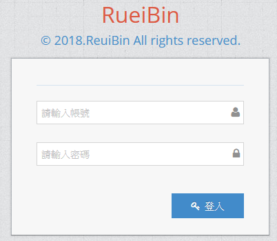
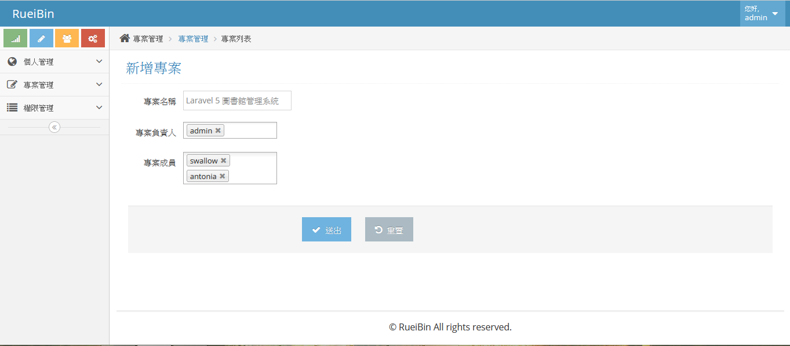
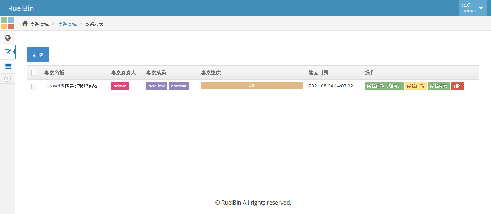
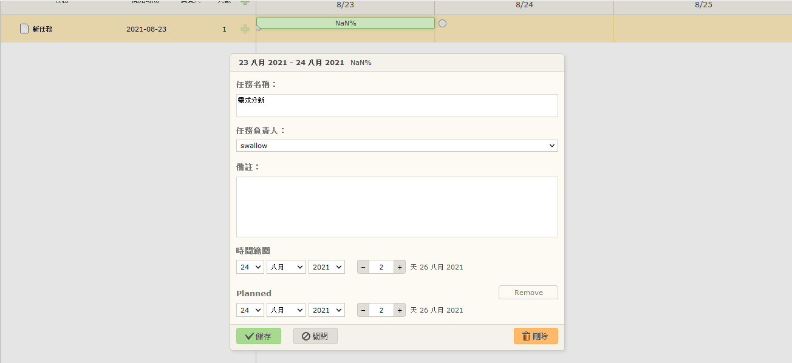
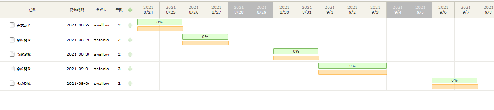
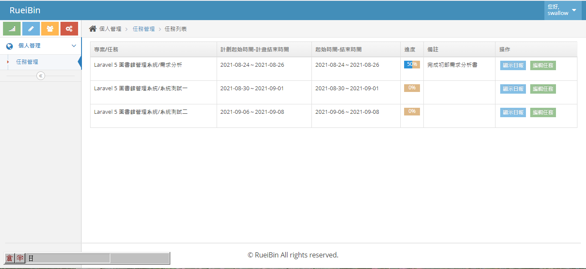
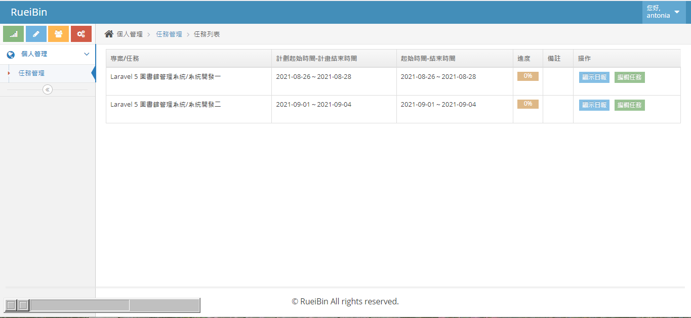
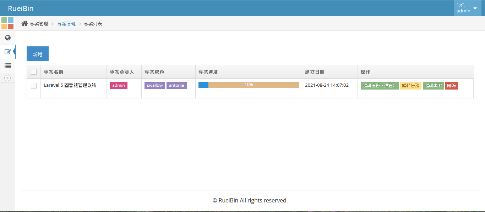
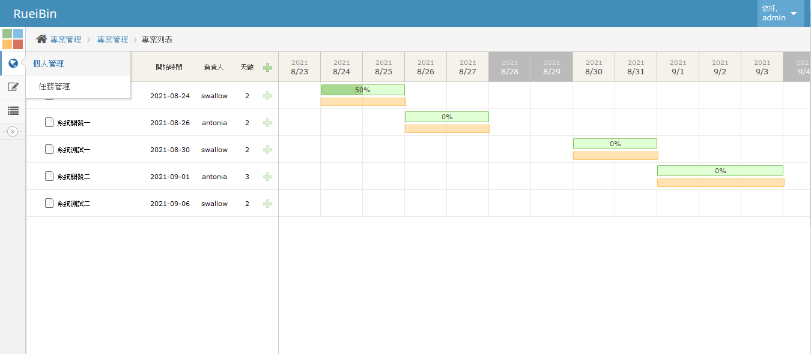

使用Laravel來開發一個專案管理系統。可以新增專案，並指定專案負責人（1人或多人）與專案成員， 專案在新增任務時，可以設定規定完成日期與預計完成日期，並指派任務給成員。
專案是以列表呈現，而專案任務是以甘特圖呈現。在專案列表可以看到整個專案進度的百分比， 專案任務可以看到每個任務完成的百分比和任務日期是否逾期。
專案的進度是由任務自動統計，所以，專案成員必須到自己的任務列表填寫任務進度。
登入畫面

新增專案

專案列表

新增專案任務

專案任務列表

swallow帳號任務列表

antonia帳號任務列表

專案列表：進度

專案任務列表：進度
